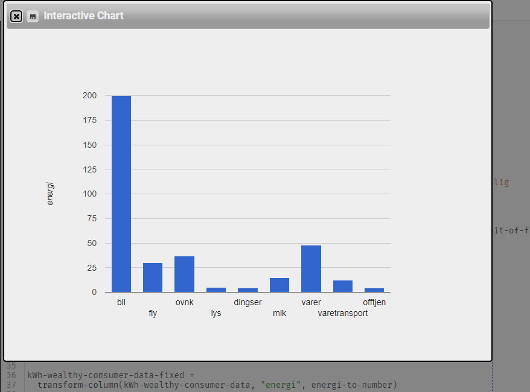

svg:
canvas:
Navn
: Ayub Omar
Beskrivelse
:
19 år gutt fra Somalia som studerer bachelorgrad i IT ved UIA.
Interesser
:
Hustling, Koding, Soving
Kreativ figur i Pyret

Jeg har ikke bil, så min "bil" ville vært mindre